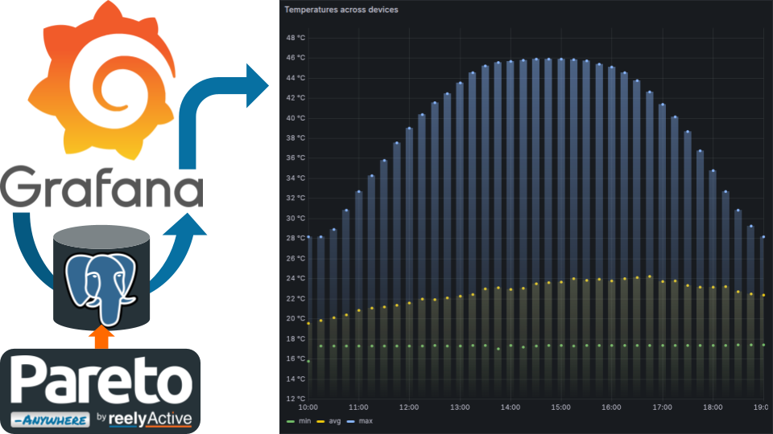
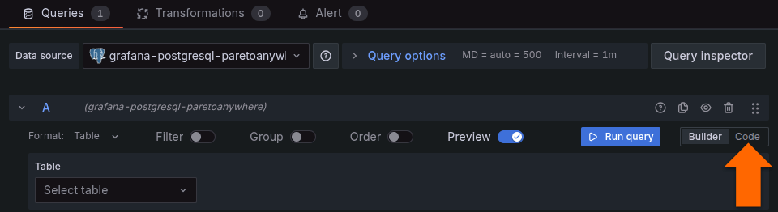
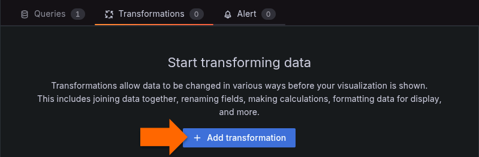
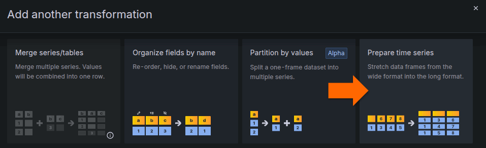
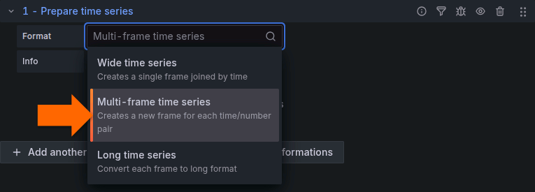

Grafana time series with PostgreSQL
Create Grafana time series visualisations of stored IoT data from Pareto Anywhere.
The TL;DR (Too Long; Didn't Read)
Learn how to create time series visualisations in Grafana with IoT data from Pareto Anywhere.
- What's a time series?
- Time series visualisations show the variations of a set of data values over time. Each data point is matched to a timestamp and this time series is displayed as a graph.
- What's Pareto Anywhere?
- Pareto Anywhere is open source IoT middleware that makes the data from just about anything usable.
- Why PostgreSQL?
- PostgreSQL, the world's most advanced open source relational database, facilitates time series and geospatial queries of the IoT and RTLS data from Pareto Anywhere.
Prerequisites
A PostgreSQL database and Grafana installed.
-
Install PostgreSQL and PostGIS
Prepare the open source relational database with geospatial support.
-

-
Grafana with PostgreSQL
Prepare Grafana to visualise IoT and RTLS data from Pareto Anywhere via a PostgreSQL database.
Creating the panel Step 1 of 2
Create a new time series visualisation with PostgreSQL query.
- What's a panel?
- The panel is a visual representation of data composed of a PostgreSQL database query and its visualisation.
- Duplicate instead?
- If an existing panel is available, it may be easier to duplicate and edit, rather than create from scratch.

Add new time series visualisation Part 1
In Grafana, open an existing dashboard, or create a new dashboard.
From the top menu of the dashboard, click Add and select Visualization.
An Edit panel screen will appear, similar to that shown below.
From the Visualization pull down menu at right, select Time series.
Enter query Part 2
Grafana offers the possibility to prepare a query via a Builder tool or a Code entry option. In the Queries window, select the Code entry option.
In the code window, enter a PostgreSQL query based on one of the following examples:
Minimum, average and maximum temperature (3 series) across all devices per 15-minute time window.
SELECT $__timeGroupAlias(timestamp, 15m), min((dynamb->>'temperature')::float) AS min, avg((dynamb->>'temperature')::float) AS avg, max((dynamb->>'temperature')::float) AS max FROM dynamb WHERE dynamb ? 'temperature' GROUP BY 1 ORDER BY $__timeGroup(timestamp, 15m);
Each individual device's battery percentage (variable number of series) per 1-hour time window with device signature (id) as label.
SELECT $__timeGroupAlias(timestamp, 1h), avg((dynamb->>'batteryPercentage')::float) AS avg, devicesignature FROM dynamb WHERE dynamb ? 'batteryPercentage' GROUP BY 1, devicesignature ORDER BY $__timeGroup(timestamp, 1h);
Click the Run query button to validate that the query is successful. Correct any errors and repeat as necessary.
Add transformation (OPTIONAL) Part 3
In the case of queries with a variable number of series, a Multi-frame time series tranformation will separate each series for proper visualisation. In the Transformations window, click the Add transformation button.
Select the Prepare time series transformation from the list of transformations.
Select the Multi-frame time series transformation from the list of formats.
The query should now be visualised correctly. It is now possible to customise the panel, which is covered in Step 2 below.
Customising the panel Step 2 of 2
Customise the visualisation and the panel.
- What are the options?
- Grafana offers extensive panel configuration options, including the title, style, units and colour palette.
- More details?
- Consult Grafana's Time series configuration options documentation for more details.
Edit panel options Part 1
Details to come.


Tutorial prepared with ♥ by jeffyactive.
You can reelyActive's open source efforts directly by contributing code & docs, collectively by sharing across your network, and commercially through our packages.Where to next?
Continue exploring our open architecture and all its applications.
-

-
Directory of Devices
Browse all device configuration tutorials and development guides.
-

-
reelyActive Developers
Browse all developer documentation and tutorials.
-

-
reelyActive
Together, let's make sense of things.